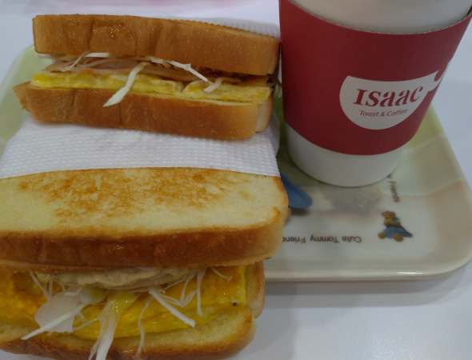
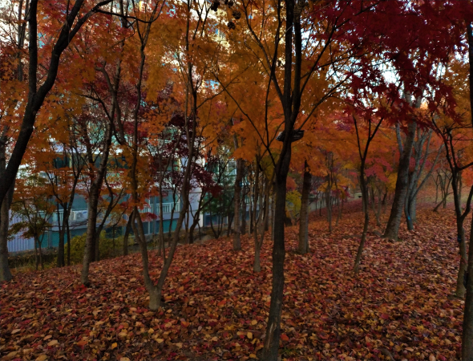
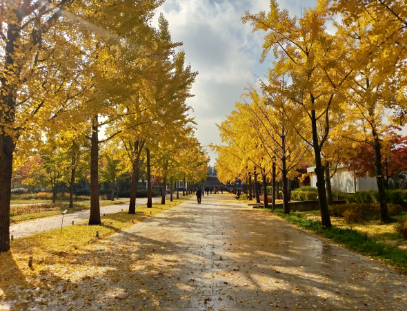
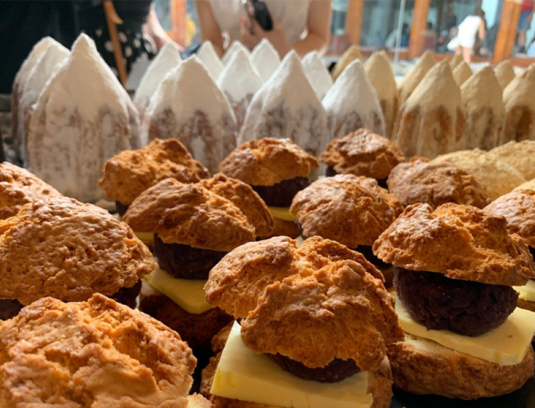
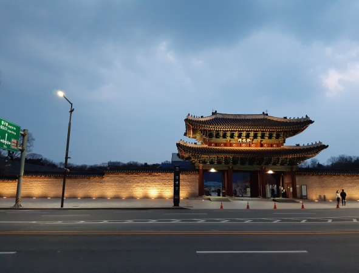

ISAAC TOAST
一天行程的開始就是要用美好的早餐餵飽自己啦！Isaac是一個很方便又快速的選擇，品項多也都很好吃！
限定季節裡的韓國一日遊該怎麼安排？
作者：波波

09：00
一天行程的開始就是要用美好的早餐餵飽自己啦！Isaac是一個很方便又快速的選擇，品項多也都很好吃！
10：30
秋天的韓國最先想到的肯定就是楓葉啦！不需要像常聽說的這麼累去爬山，夢之森就藏在首爾市區不遠處，楓葉盛開的季節最適合拍照了！
13：30
秋天的韓國，除了早上看到的楓葉之外，還有很多路上常見的銀杏樹，和風右季節接近，首爾林是一個賞銀杏很棒的選擇。下午光線好的時候，銀杏林真的會閃閃發金光！
15：00
在首爾分別擁有兩家分店的onion，各自有各自的風格，同樣不變的是甜點都超好吃！下午晃蕩累了可以進去店裡休息一下，或者在附近街區走走，無論韓屋或是藝術風都很有氛圍感。
18：00
位於昌德宮旁邊的菖慶宮雖然不怎麼廣為人知，但根據小編輕身經驗，這邊的楓葉與黃昏才是最棒搭配，在宮殿裡欣賞夕陽逐漸西下的景色，是鮮為人知的美好。